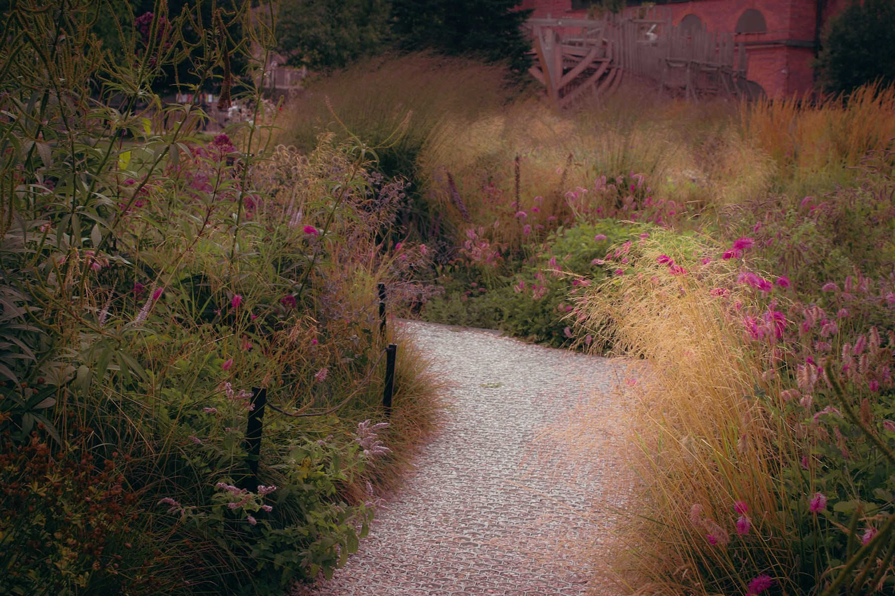
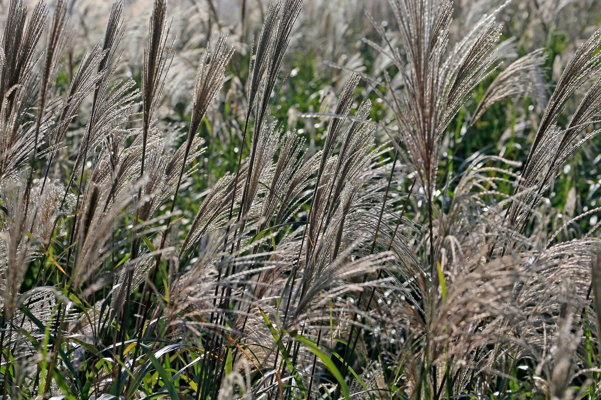
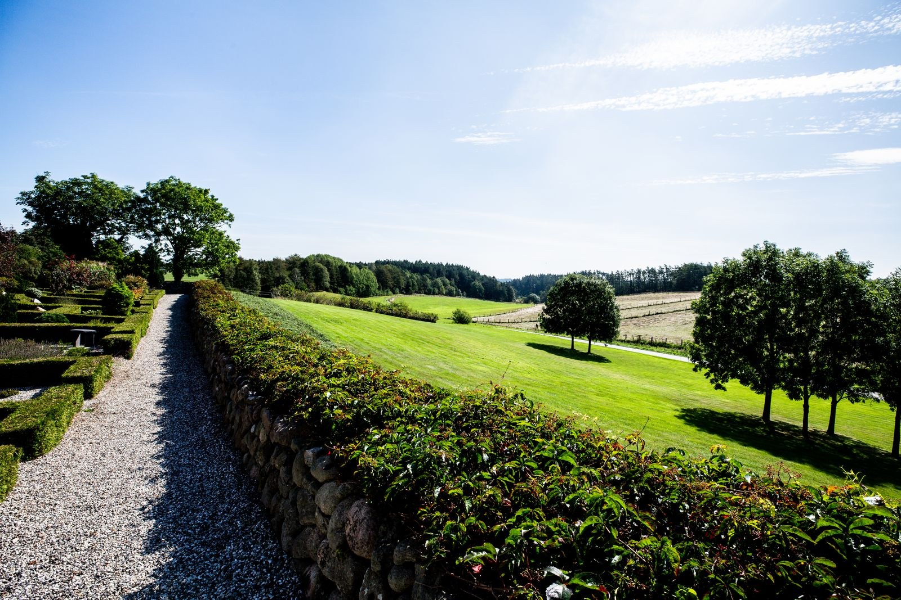

Laat je
meenemen.
Een pad dat niet alleen ergens heen gaat,
maar onderweg iets laat zien.
Tuinontwerp, aanleg en beplanting.
Van de indeling tot de laatste plant.
Je merkt het aan een pad dat logisch ligt. Aan een fijne plek in de avondzon. Aan planten die door het jaar heen steeds iets anders laten zien.
Bij mos brengen we de indeling, materialen en beplanting bij elkaar. Vanaf je eerste ideeën tot het moment waarop je buiten gaat zitten.
Zo pakken we het aan
Een pad dat niet alleen ergens heen gaat,
maar onderweg iets laat zien.

Verschillende hoogtes, bladstructuren en bloeitijden.
Een tuin die blijft veranderen.

Een plek voor de avondzon.
En voor helemaal niets moeten.
Een ontwerp krijgt pas waarde als het past bij de plek en bij de mensen die er straks gebruik van maken.
Waar valt de zon? Wat wil je zien vanuit de woonkamer? Hoeveel tijd wil je in onderhoud steken? Met die vragen begint het plan.
Een heldere indeling, materialen en een beplantingsplan maken het ontwerp concreet. Zo kun je keuzes maken voordat de schop de grond in gaat.
Van het grondwerk tot de laatste plant: we houden de onderdelen bij elkaar. Ook de aansluiting op het huis en het onderhoud krijgen aandacht.
Planten groeien, het licht verandert en ieder seizoen brengt iets nieuws. Daarom ontwerpen we niet alleen voor de eerste zomer.
Vertel over jouw tuinEen nieuwe indeling, meer beplanting of een complete tuin. Vertel over de plek en wat je er graag zou doen.